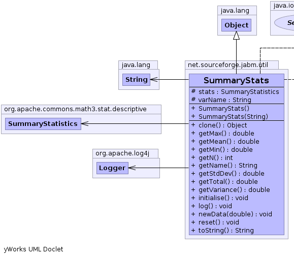
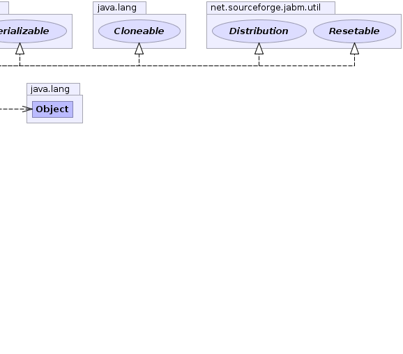

net.sourceforge.jabm.util.SummaryStats
net.sourceforge.jabm.util.SummaryStats
|
|||||||||
| PREV CLASS NEXT CLASS | FRAMES NO FRAMES | ||||||||
| SUMMARY: NESTED | FIELD | CONSTR | METHOD | DETAIL: FIELD | CONSTR | METHOD | ||||||||
java.lang.Object
public class SummaryStats
A utility class for cumulative tracking of stats for a set of doubles. Moments are incremented dynamically, rather than keeping the actual cases in memory.
Example usage:
Distribution series1 = new SummaryStats("series1");
series1.newData(4.5);
series1.newData(5.6);
series1.newData(9.0);
System.out.println("Standard deviation of series1 = " + series1.getStdDev());
series1.newData(5.56);
series1.newData(12);
System.out.println("And now the standard deviation = " + series1.getStdDev());
|  |  |
| Field Summary | |
|---|---|
protected org.apache.commons.math3.stat.descriptive.SummaryStatistics |
stats
|
protected java.lang.String |
varName
The name of this data set. |
| Constructor Summary | |
|---|---|
SummaryStats()
|
|
SummaryStats(java.lang.String varName)
|
|
| Method Summary | |
|---|---|
java.lang.Object |
clone()
|
double |
getMax()
Get the maximum datum. |
double |
getMean()
Get the mean of the data. |
double |
getMin()
Get the minimum datum. |
int |
getN()
Get the number of items in the set. |
java.lang.String |
getName()
|
double |
getStdDev()
Get the standard deviation from the mean. |
double |
getTotal()
Get the total of the data |
double |
getVariance()
Get the variance about the mean. |
void |
initialise()
|
void |
log()
Output the moments of the distribution to the info log. |
void |
newData(double i)
Add a new datum to the set. |
void |
reset()
Reinitialise our state to the original settings. |
java.lang.String |
toString()
|
| Methods inherited from class java.lang.Object |
|---|
equals, finalize, getClass, hashCode, notify, notifyAll, wait, wait, wait |
| Field Detail |
|---|
protected org.apache.commons.math3.stat.descriptive.SummaryStatistics stats
protected java.lang.String varName
| Constructor Detail |
|---|
public SummaryStats(java.lang.String varName)
public SummaryStats()
| Method Detail |
|---|
public void initialise()
public void newData(double i)
newData in interface Distributionpublic int getN()
getN in interface Distributionpublic double getMean()
getMean in interface Distributionpublic double getVariance()
getVariance in interface Distributionpublic double getStdDev()
getStdDev in interface Distributionpublic double getMin()
getMin in interface Distributionpublic double getMax()
getMax in interface Distributionpublic double getTotal()
getTotal in interface Distribution
public java.lang.Object clone()
throws java.lang.CloneNotSupportedException
clone in class java.lang.Objectjava.lang.CloneNotSupportedExceptionpublic void reset()
Resetable
reset in interface Resetablepublic java.lang.String getName()
getName in interface Distributionpublic java.lang.String toString()
toString in class java.lang.Objectpublic void log()
Distribution
log in interface Distribution
|
|||||||||
| PREV CLASS NEXT CLASS | FRAMES NO FRAMES | ||||||||
| SUMMARY: NESTED | FIELD | CONSTR | METHOD | DETAIL: FIELD | CONSTR | METHOD | ||||||||